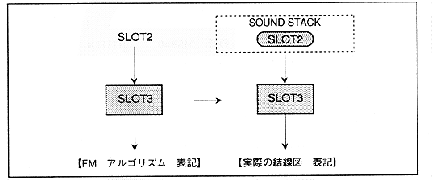

0 -2 = -2
∙ Since this satisfies condition 2 of 4.1, the MSB of "MDXSL" and "MDYSL" is
32+ (-2) = 30 = 1E H = (011111) B When the latest sample is MSB = 0 (011110) B = 1E HB = 3E H
It becomes.
* Note
Basically, when entering slots with different numbers, enter samples of the same generation. The conventional FM sound source uses this method, so this method should be used when porting the sound source library of FM sound source.
(3) Parameter
to be set in slot 3
Figure 4.37 Slot 3 algorithm

* Slot 3 has only one input, so the output of slot 2 must be input to both modulation inputs X and Y.
Since there is no possibility of oscillation if the connected slots are different, even if only the latest sample, only the past sample, or the latest sample on one side and the past sample on the other side are input to both modulation inputs X and Y does not matter. Use only one of the samples when porting a traditional FM sound library.